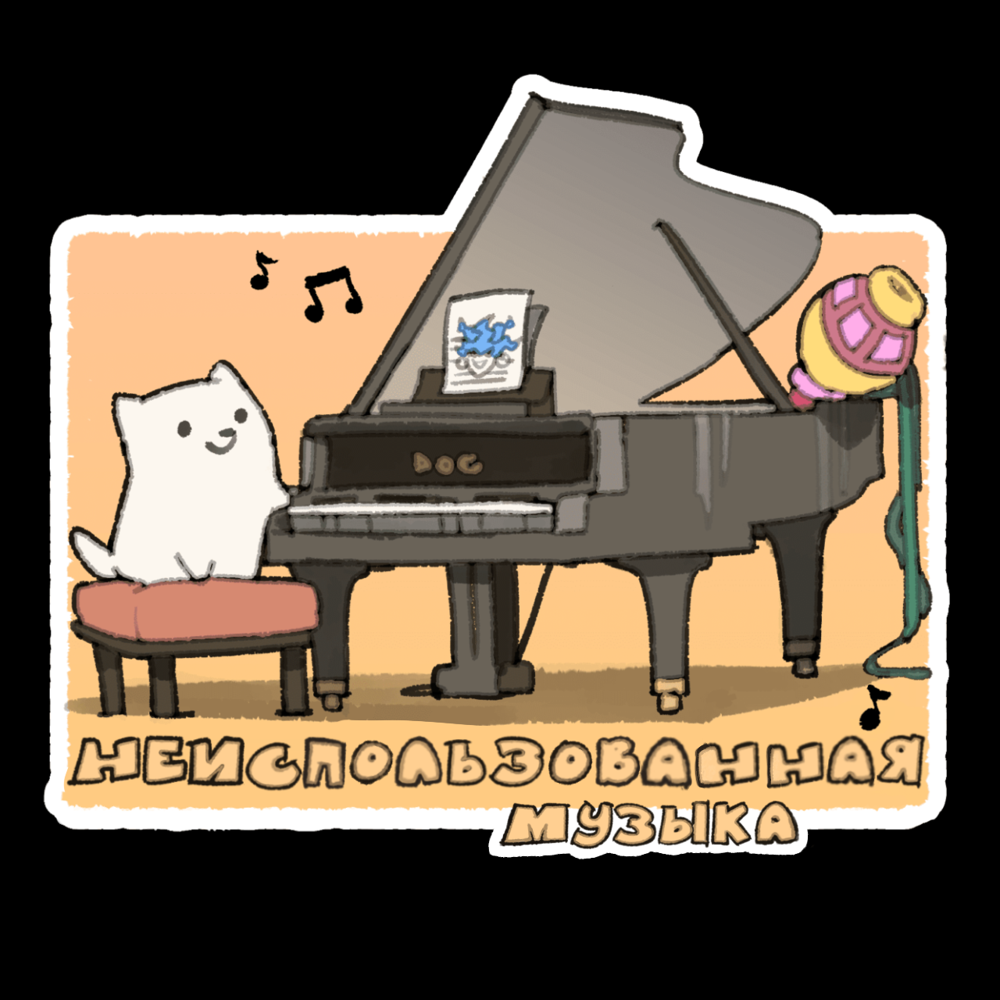

Если первое что делать - писать музыку, это может помочь лучше понять настроение и личность босса или сцены. Так или иначе идеи и персонажи меняются, так что изначальная задумка не всегда реализуется....
Так что тут собраны некоторые вырезанные треки из второй главы!
Power of NEO (Незавершенная версия)
После создания UNDERTALE, я очень хотел дать возможность игрокам в DELTARUNE наконец то сразиться с "реальной" версией Меттатона НЕО, которая бы не завершилась после первого же хода. Для того я даже написал несколько музыкальных набросков в качестве расширенной версии "Power of NEO"
Есть даже еще один с 2016 (лол)
... К сожалению, как бы я не пытался, мне не удавалось создать полную версию трека, которая бы мне понравилась. В итоге концепт босса превратился в Спамтона и, соответственно, трек тоже изменился.
Мне все еще нравится последняя часть трека. Часть где играет гитара была вдохновлена Brandish, треком "Ending 2". Но все это лишь черновой вариант.
Мне нравится думать об этой битве... Если подвернется причина расширить POWER OF NEO вновь, скорее всего я сделаю что то совершенно иное.
Power of SPAMTON (Старая версия) / Power of Spamton
Незаконченные треки. И барабанная часть черновая.
Когда было твердо решено, что будет битва со Спамтоном в качестве НЕО, я понял что оригинальный трек вообще не подойдет, так что я попытался сыграть на небольшой жути. И получилось вот это.
Первые два трека почти идентичны, но версия "поновее" отличается барабанной частью и там есть некоторые части из темы Спамтона. (И эта версия еще более незаконченная...)
Spamton battle (Забытая версия)
Кажется, это был первый концепт для битвы со Спамтоном. Я вообще не помню этого трека. Когда я нашел его в файлах я удивился. (Может Спамтон сам сделал его...)
Кстати, изначально я хотел, чтобы тема Спамтона что играет при встрече с ним "HEY EVERY !" была так же и темой его магазинчика. Планировалось что трек будет становиться все ниже с каждым проигрыванием, пока не становился бы неузнаваемым. Но в конечном счете это не сходилось с настроением диалога, так что я использовал Dialtone для магазинчика.
Giga Queen (Старая версия)
Трек что играет когда Гига-Королева появляется впервые на самом деле...
Замедленная версия трека что я написал для битвы с ней!!!
Не смотря на то что все черновое, мне кажется трек не такой уж и плохой. Правда оно совсем не звучит как боксерский матч. После того как я создал часть для "The Thrash Machine Power", я решил основать весь трек на этой части.
Castle town (Незавершенная версия)
Изначально я хотел чтобы Castle Town был веселым, но почему то слушая это у меня возникали ассоциации с... Той песней от Gotye.
Мелодия в начале мне кажется слишком репетативной, но мне очень нравится то как все звучит после 0:45.
А после 1:27 она совершенно не закончена.
Rouxls Battle
Этот трек я показывал еще до выхода второй главы. Правда в том, что я писал этот трек для второй главы, а не для первой. Она звучит слишком серьезно, так что мне пришлось сделать тему немного бестолковее.
Queen battle (Первоначальная версия)
Думаю это мой самый любимый из незавершенных треков. Его я переслушивал чаще всего, работая над игрой.
Изначально Королева была более опасной, я хотел чтобы это было темой битвы с ней. Мне самому оно все еще очень нравится и я даже хотел использовать это в качестве темы Бердли. Но оно не очень подходит к темам персонажей, что я к тому моменту уже создал.
Странно то, что кажется я сделал этот трек уже после создания темы Королевы, ибо ранняя версия ее темы лежит среди файлов проекта.
с 1:30 (часть с пианино) не завершено.